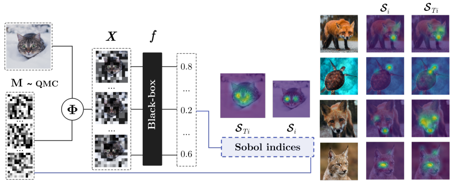
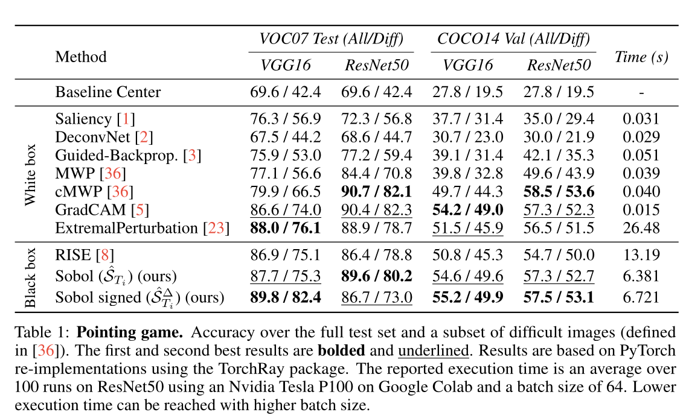
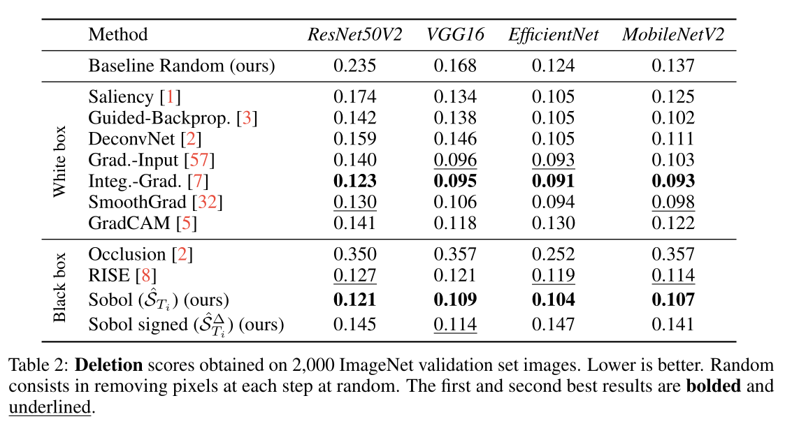
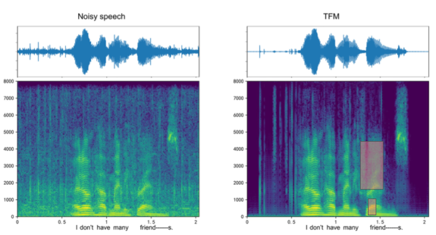

XAI: Variance-Based Analysis
MVA - APM_5MV75_TP
Mathieu FONTAINE
January 2025
Goal: define "feature importance" precisely, then introduce Sobol indices and their use for local XAI (Fel et al.).
Big picture: importance is not a primitive concept — it depends on how we vary the input.
We will emphasize interactions (why total-order indices matter in deep models and in audio).
Outline
I - What Does “Feature Importance” Really Mean?
II - Measuring Importance Through Variance
III - Sobol Decomposition: Theory and Interpretation [Sob. 01]
IV - Local Feature Importance via Perturbations [Fel. 21]
V - Sobol Indices Estimation
VI - What Sobol Explains (and What It Does Not)
VII - Take-Home Messages
Part I: make the concept of importance explicit with simple examples.
Part II: introduce variance and conditional variance as the clean measure of sensitivity.
Part III: functional ANOVA / Sobol decomposition (why variance becomes additive).
Part IV: turn Sobol into local XAI by studying perturbation masks around a fixed input.
Part V: practical estimators (Saltelli/Jansen) + sample efficiency (QMC + Sobol sequences).
Part VI: interpretability caveats (off-manifold, baseline dependence, independence assumptions).
Sobol, I. M. Global sensitivity indices for nonlinear mathematical models and their Monte Carlo estimates. Mathematics and computers in simulation , 2001
Fel, Thomas, et al. "Look at the variance! efficient black-box explanations with sobol-based sensitivity analysis." NeurIPS , 2021
I - What Does “Feature Importance” Really Mean?
We start with the key point: importance is not uniquely defined.
We need to specify how we change the input and how we measure the effect on the prediction.
Not really mathematic…
Consider a model $f:\mathbb{R}^d \to \mathbb{R}$ (e.g. a classification score).
Intuitive definition:
A feature is important if changing it changes the prediction.
Changing it how?
Gradient-based importance (infinitesimal changes)
Occlusion / masking (finite removal)
SHAP (coalitions / marginal contributions)
Sobol (variance decomposition + interactions)
Stress: you cannot talk about importance without defining a notion of variation.
Different XAI methods correspond to different variation mechanisms + aggregation rules.
Example 1: Linear model
Consider $f(x_1,x_2)=3x_1+0.1x_2$.
Changing $x_1$ affects the output much more than changing $x_2$.
In this special case: importance $\approx$ coefficient magnitude.
This is a global notion (same for all inputs).
Here, "importance" feels obvious because the model is additive and linear.
But this breaks as soon as the function is non-linear or interaction-dominated.
Example 2: Gradient (local)
Consider $f(x_1,x_2)=x_1^2+x_2$.
$\nabla f(x) = (2x_1,\,1)$.
At $x=(0,1)$: the sensitivity to $x_1$ is $0$, to $x_2$ is $1$.
We have a local notion of importance.
It depends on the local metric / scaling.
Gradient answers: "which infinitesimal direction changes the output most at this point?".
It can fail on plateaus, saturations, or when information is mainly in interactions.
Example 3: Occlusion (finite change)
Occlusion = remove some input information and compare the prediction before/after.
Image: hide a patch
Audio: remove a frequency band / TF region
Text: delete a word
Let $f(x_1,x_2)=x_1x_2$ and input $(x_1,x_2)=(1,1)$. Then $f(1,1)=1$.
If we remove $x_1$ (set $x_1=0$), then $f(0,1)=0$. If we remove $x_2$, $f(1,0)=0$.
Both are important… individually or only jointly?
Occlusion detects "usefulness" but does not explain whether the usefulness is due to main effects or interactions.
This motivates variance decomposition methods that explicitly separate main/interaction contributions.
Hidden interaction (Sobol motivation)
In $f(x_1,x_2)=x_1x_2$, neither variable has a strong individual effect everywhere:
the effect comes from their interaction .
How can we separate what comes from individual effects and what comes from interactions?
We want a principled decomposition that assigns a "variance budget" to main effects and interactions.
This is the key promise of Sobol indices.
Feature importance (in this course)
Feature importance: measure how much the prediction varies when a given feature is allowed to vary,
possibly jointly with others.
Sobol: provides an exact and additive decomposition of variance into main effects and interactions (under assumptions).
We now formalize "variation" using probability and variance.
Then we show how variance can be split across variables and interactions.
Variance-based feature importance
To define "importance", we must define input variability .
$$\textbf{(1) Random input:}\qquad X=(X_1,\dots,X_d)\sim p_X$$
Intuition: if knowing $X_i$ changes the conditional mean prediction a lot, then $X_i$ is important.
At this stage, we do not define any "Sobol index" yet.
We only build the variance-based intuition: importance = explained variance.
\(\mathbb{E}[Y|X_i]\) is the best prediction of \(Y\) using only \(X_i\).
If \(X_i\) carries information, then \(\mathbb{E}[Y|X_i]\) varies with \(X_i\), hence its variance is large.
If \(X_i\) is irrelevant, then \(\mathbb{E}[Y|X_i]\approx \mathbb{E}[Y]\), hence variance is ~0.
II - Measuring Importance Through Variance
We formalize input variations by introducing random variables and studying output variance.
Key tool: law of total variance, leading to main and total effects.
Setup: make the output random
Deterministic model: $f:\mathbb{R}^d \to \mathbb{R}$
Introduce random input: $X=(X_1,\dots,X_d)$
Output becomes a random variable:
$$Y=f(X)$$
All importance notions depend on how we choose the distribution of $X$ (or local perturbations later).
Variance-based methods are global by default (distribution over the domain).
Fel et al. will adapt this to local explanations using perturbation distributions around a fixed input.
Notation
For a given index $i$, we denote:
$$X_{\sim i}=(X_1,\dots,X_{i-1},X_{i+1},\dots,X_d)$$
$X_i$ = “feature of interest”, $X_{\sim i}$ = “all other features”.
I will use $X_{\sim i}$ everywhere: it simply means “everything except $X_i$”.
Variance as global sensitivity
$$\mathbb{E}[Y]=\int f(x)\,p_X(x)\,dx$$
$$\mathrm{Var}(Y)=\mathbb{E}[Y^2]-\mathbb{E}[Y]^2$$
High variance $\Rightarrow$ sensitive output. Low variance $\Rightarrow$ stable output.
Variance ignores sign: it measures magnitude of variation, not direction.
This is exactly what we need for an “importance magnitude”.
Law of total variance
For any $Y$ and any variable $X_i$:
$$\mathrm{Var}(Y)=\mathrm{Var}\big(\mathbb{E}[Y\mid X_i]\big)+\mathbb{E}\big[\mathrm{Var}(Y\mid X_i)\big]$$
This identity is the starting point for variance-based feature importance.
Interpretation: explained variance + residual variance.
$\mathrm{Var}(\mathbb{E}[Y|X_i])$: how much the mean output changes with $X_i$.
$\mathbb{E}[\mathrm{Var}(Y|X_i)]$: what remains variable even if $X_i$ is known.
Main effect vs total effect
Main-effect variance contribution:
$$D_i \triangleq \mathrm{Var}\big(\mathbb{E}[Y\mid X_i]\big)$$
Total-effect variance contribution (includes interactions):
$$D_i^{\mathrm{tot}} \triangleq \mathbb{E}\big[\mathrm{Var}(Y\mid X_{\sim i})\big]$$
$$= \mathrm{Var}(Y)-\mathrm{Var}\big(\mathbb{E}[Y\mid X_{\sim i}]\big)$$
$D_i$: effect of $X_i$ alone.
Normalized indices
$$S_i \triangleq \frac{D_i}{\mathrm{Var}(Y)} \qquad (\text{first-order})$$
$$ST_i \triangleq \frac{D_i^{\mathrm{tot}}}{\mathrm{Var}(Y)} \qquad (\text{total-order})$$
$$0 \le S_i \le ST_i \le 1$$
$S_i$ tells you if the feature matters alone.
$ST_i$ tells you if it matters at all (alone or via interactions).
The gap $ST_i - S_i$ is an interaction diagnostic.
Toy example A: additive model
$X_1,X_2 \sim \mathcal{U}[0,1]$ independent, $Y=X_1+X_2$
$$\mathrm{Var}(Y)=\mathrm{Var}(X_1)+\mathrm{Var}(X_2)=\frac{1}{12}+\frac{1}{12}=\frac{1}{6}$$
$$D_1=\mathrm{Var}(\mathbb{E}[Y|X_1])=\mathrm{Var}(X_1)=\frac{1}{12}$$
$$S_1=\frac{D_1}{\mathrm{Var}(Y)}=\frac{1/12}{1/6}=\frac{1}{2}$$
No interactions: $S_1=ST_1=1/2$, $S_2=ST_2=1/2$.
Great sanity check: additive model means no interaction terms in Sobol decomposition.
Toy example B: pure interaction
$X_1,X_2 \sim \mathcal{U}[0,1]$ independent, $Y=(X_1-\frac{1}{2})(X_2 - \frac{1}{2})$
$$\mathbb{E}[Y]=0$$
Main effects vanish: $S_1=S_2=0$. Total effects are maximal: $ST_1=ST_2=1$.
This is the “interaction-only” archetype: importance exists, but only jointly.
This is why we will care about total-order indices for XAI.
III - Sobol Decomposition: Theory and Interpretation [Sob. 01]
Now we justify why variance splits cleanly across main effects and interactions.
We do NOT aim for a full proof; we focus on the role of centering and orthogonality.
Functional ANOVA / Hoeffding decomposition
Assume $X_1,\dots,X_d$ independent and $f\in L^2$.
Assume that $\int f_u(X_u)d\mathbb{P}_{X_i} = 0, \forall i \in u, \forall u \subset \{1, \dots, d\}$
Then $f$ admits a unique decomposition:
$$f(X)=f_0+\sum_i f_i(X_i)+\sum_{i< j} f_{ij}(X_i,X_j)+\cdots+f_{1\cdots d}(X_1,\dots,X_d)$$
“main effects + pairwise interactions + higher-order interactions”.
Sobol. Sensitivity estimates for nonlinear mathematical models.
Wiley 1 407-414, 1993
Van Der Vaart, A. W. Asymptotic Statistics. Cambridge University
Press, ,2012
This is an ANOVA-like decomposition but for general non-linear functions.
Each term represents the information not explained by lower-order terms.
Centering constraint for variance additivity (1/2)
Without constraints, the decomposition is not unique (constants can be moved between terms).
The two previous assumptions (aka. zero-mean constraints) make terms identifiable
$$\mathbb{E}[f_i(X_i)] = 0,\quad \mathbb{E}[f_{ij}(X_i,X_j)\mid X_i]=0,\quad \mathbb{E}[f_{ij}(X_i,X_j)\mid X_j]=0 $$ etc.
Each term contains only the “new effect” not already captured by lower-order components.
Example: you can add +c to f1 and subtract c from f0: same f. So constraints fix a canonical representation.
Interpretation: f_i is the pure main effect after removing the global mean; f_ij is the pure interaction after removing main effects.
Centering constraint for variance additivity (2/2)
Under independence + centering constraints, ANOVA components are orthogonal:
$$\mathbb{E}\big[f_u(X_u)\,f_v(X_v)\big]=0 \quad \text{for } u\neq v$$
Therefore, variance decomposes exactly:
$$\mathrm{Var}(f(X))=\sum_{u\neq\emptyset}\mathrm{Var}(f_u(X_u))$$
This is the core reason Sobol indices are “clean”: exact variance budget, no heuristics.
Like perpendicular vectors: cross-terms vanish (no covariance terms).
That’s why we choose variance (not Lp norms): it decomposes additively here.
Sobol indices for subsets
For any subset $u\subseteq\{1,\dots,d\}$:
$$D_u \triangleq \mathrm{Var}(f_u(X_u)),\qquad S_u\triangleq \frac{D_u}{\mathrm{Var}(f(X))}$$
$$S_u\ge 0,\qquad \sum_{u\neq\emptyset} S_u = 1$$
These indices form a probability-like decomposition of variance over subsets.
They quantify contribution of each interaction order.
Alternative expressions (useful)
Main-effect function (intuition):
$$f_i(x_i)=\mathbb{E}[f(X)\mid X_i=x_i]-f_0$$
Main-effect variance contribution (from Part II):
$$D_i=\mathrm{Var}\big(\mathbb{E}[f(X)\mid X_i]\big)$$
This is the bridge between Part II (conditional variance) and Part III (functional ANOVA).
Students often ask: “where do the functions f_i come from?” Answer: conditional expectation minus global mean.
This is also the basis for Monte Carlo estimators.
Total-order index and interactions
Total-order index aggregates all terms involving feature $i$:
$$ST_i = \sum_{u\ni i} S_u$$
Interpretation: $ST_i$ measures “everything that uses feature $i$” (directly or via interactions).
$$ST_i \approx S_i \Rightarrow \text{weak interactions}, \qquad ST_i \gg S_i \Rightarrow \text{strong interactions}.$$
For deep networks and signal tasks, the gap is often large: interactions dominate.
IV - Local Feature Importance via Perturbations [Fel. 21]
Part II–III were global: Sobol indices measure sensitivity under an input distribution.
Fel et al. adapt Sobol to LOCAL explanations by introducing a perturbation distribution around a fixed input x.
Randomness here is not the dataset distribution: it is the perturbation mask distribution.
Goal: produce a saliency map (heatmap) for one input x.
Local explanation (1/2)

Local variance-based explanation $\texttt{[Fel. 21]}$: perturb patches, evaluate the model, estimate total-order Sobol indices, and visualize as a heatmap.
We want to explain a single input $x$ (image / audio / text).
Introduce a random mask $M=(M_1,\dots,M_d)$ controlling visibility of regions.
Define a perturbation operator $\Phi(x,M)$.
Local explanation (2/2)
We want to explain a single input $x$ (image / audio / text).
Introduce a random mask $M=(M_1,\dots,M_d)$ controlling visibility of regions.
Define a perturbation operator $\Phi(x,M)$.
$$M=(M_1,\dots,M_d)\in[0,1]^d$$
$$\tilde x = \Phi(x,M)$$
$$Y = f(\tilde x)=f(\Phi(x,M))$$
We apply variance-based analysis to the random variable $Y$ induced by random perturbations $M$.
Very important: here “features” are the components of the mask, not raw pixels.
We can choose d as patches / superpixels / TF tiles / words.
Independence assumption is now on mask variables, and is often true by design (we sample them i.i.d.).
Perturbation operator: baseline inpainting
Typical continuous perturbation used in the paper:
$$\Phi(x,M)=x\odot M + (1-M)\odot \mu$$
$\mu$ is a baseline / reference input (black image / blur / mean / inpainted content).
Explanations are conditional on the perturbation model $(\Phi,\mu)$.
This is exactly like occlusion, but relaxed to a soft mask in [0,1].
Baseline choice is critical: it defines what “removing information” means.
In audio, baseline can be silence, spectral floor, or TF inpainting.
From perturbations to a saliency map
We sample many masks $M^{(1)},\dots,M^{(N)}$.
We build perturbed inputs $\tilde x^{(n)}=\Phi(x,M^{(n)})$.
We evaluate the model outputs $Y^{(n)}=f(\tilde x^{(n)})$.
We estimate Sobol indices for each mask component $M_i$.
One importance score per region $\Rightarrow$ reshape into a grid $\Rightarrow$ heatmap.
This slide explains where the heatmap comes from: ST_i is computed per patch.
Then we just “put back” ST_i on the corresponding spatial region and upsample for display.
Local Sobol importance (Total-order)
For a given region/feature $i$ (mask component $M_i$), we use the total-order Sobol index.
$$ST_i =
\frac{
\mathbb{E}_{M_{\sim i}}\left[\mathrm{Var}_{M_i}\left(Y \mid M_{\sim i}\right)\right]
}{
\mathrm{Var}(Y)
}$$
$ST_i$ captures the contribution of region $i$, including all interactions with other regions.
This is the correct total-order formula: expectation of conditional variance.
Interpretation: fix all regions except i, vary only i, measure how much variability remains.
Deep models often rely on interactions (textures, shapes, harmonics) → total-order is safer than first-order.
Why total-order is the default in this paper
First-order $S_i$ measures the isolated effect of region $i$.Total-order $ST_i$ measures everything that involves region $i$.If $ST_i \gg S_i$, region $i$ mostly acts through interactions .
For local saliency, interactions matter a lot (edges + context, harmonics + formants, etc.).
Good opportunity to connect to the product example in Part II: pure interaction can have S_i=0 but ST_i=1.
This is why interaction-aware explanations are very different from gradients.
Signed importance (optional)
Sobol indices are non-negative: they measure magnitude (how much it matters), not direction.
A simple signed variant attaches a sign using an occlusion test:
$$\mathrm{sign}_i=\mathrm{sign}\big(f(x)-f(x\setminus i)\big)$$
$$ST_i^{\Delta} = ST_i \cdot \mathrm{sign}_i$$
The sign is baseline-dependent. The magnitude $ST_i$ is the robust part.
You can skip this slide if you want to stay minimal.
Signed maps are useful for “supports vs contradicts” storytelling, but depend strongly on what “removal” means.
V - Sobol Indices in Practice (Estimators)
Now we need to compute ST_i efficiently with only black-box access to f.
Fel et al. use Jansen estimators + Quasi-Monte Carlo (Sobol sequences) to reduce estimator variance.
Why we need estimators
Definitions involve conditional expectations / high-dimensional integrals.
We want a black-box estimator using only evaluations of $f(\Phi(x,M))$.
Key trick: build pairs of perturbations that differ in one component .
We will estimate the conditional variance term inside $ST_i$.
We are approximating “vary only region i, keep others fixed” using structured sampling matrices.
This is where the A/B/C matrices come from.
Saltelli sampling: A, B, and mixed C
Sample two matrices of masks: $A,B\in[0,1]^{N\times d}$.
For each feature $i$, build $C^{(i)}$ by replacing column $i$ of $A$ with column $i$ of $B$.
$$C^{(i)} = (A_1,\dots,A_{i-1},B_i,A_{i+1},\dots,A_d)$$
Evaluate $f(\Phi(x,\cdot))$ on $A$, $B$, and each $C^{(i)}$.
Saltelli, Andrea, et al. "Variance based sensitivity analysis of model output. Design and estimator for the total sensitivity index." Computer physics communications 181.2 , 2010
Great figure: draw A and B as two matrices, then show the “swap one column” operation.
Interpretation: A and C(i) differ only in region i → isolates feature i effect (including interactions).
Jansen estimator: total-order
Estimate the output variance (using $A$):
$$\hat V = \frac{1}{N}\sum_{j=1}^N f(\Phi(x,A_j))^2
- \left(\frac{1}{N}\sum_{j=1}^N f(\Phi(x,A_j))\right)^2$$
$$\widehat{ST}_i=\frac{1}{2N\hat V}\sum_{j=1}^N
\Big(f(\Phi(x,A_j))-f(\Phi(x,C^{(i)}_j))\Big)^2$$
Jansen M.. Analysis of variance designs for model output.
Computer Physics Communications ,1999
Key point: squared differences measure sensitivity when only region i is switched.
The 1/(2N Vhat) normalization makes it a fraction of explained variance.
This estimator targets the “expected conditional variance” definition of ST_i.
Jansen estimator: first-order
$$\widehat{S}_i = 1-\frac{1}{2N\hat V}\sum_{j=1}^N
\Big(f(\Phi(x,B_j))-f(\Phi(x,C^{(i)}_j))\Big)^2$$
In XAI, we typically visualize $\widehat{ST}_i$ as the main saliency map.
First-order is useful pedagogically and for diagnosing interactions (ST much larger than S).
But in the paper, total-order is the main explanation map.
Computational cost
Evaluations required: $N(d+2)$ forward passes.
Typical setting in the paper: mask grid $11\times 11$ $\Rightarrow d=121$ and $N=32$:
$$32\times(121+2)=3936 \text{ forward passes}$$
Still feasible with batching on GPU.
Compare to random masking methods: many more masks are needed for stable heatmaps.
Batching is crucial: we can evaluate all perturbed inputs as a batch.
Quasi-Monte Carlo (Sobol sequences)
Instead of i.i.d. Monte Carlo masks, use a low-discrepancy sequence.
Better coverage of $[0,1]^d$ $\Rightarrow$ lower estimator variance in practice.
Very easy visual demo: random points vs Sobol points in 2D.
Main message: higher stability for the same budget.
Gerber M. On integration methods based on scrambled nets of arbitrary size. Journal of Complexity,
2015
White-box vs Black-box explanations
In XAI, the evaluation protocol often depends on whether we have access to the model internals.
White-box methods use gradients / internals:
Examples: Saliency maps (∇), Integrated Gradients, Grad-CAM, LRP
Require access to model structure + backpropagation
Black-box methods use only model outputs:
Examples: Occlusion, RISE, SHAP, Sobol perturbation-based saliency
Only require forward passes: $f(x)$ queries
Black-box explanations are generally more expensive, but more model-agnostic.
White-box: you can open the model and see inside (gradients, activations).
Black-box: you treat the model as an oracle: you query it and observe outputs.
Fel et al. is fully black-box: everything is estimated from forward passes.
Evaluation metrics we show next are also mostly black-box protocols.
Evaluation #1: Pointing Game
Goal: check whether the saliency map points to the object of interest.Requires: ground-truth object location (bounding box or segmentation mask).Protocol:
Compute a saliency map $S(x)\in\mathbb{R}^{H\times W}$
Find the most salient pixel / region:
$$p^\star = \arg\max_{p} S_p(x)$$
Hit if $p^\star$ lies inside the ground-truth object mask / box
Score = fraction of images where the explanation “points” inside the target object.
Simple and intuitive, but only tests the single most salient point.
Pointing game is like: “Where does the explanation look the most?”
It is very popular because it is simple and cheap to compute.
But it ignores the rest of the heatmap: only the maximum matters.
Also depends on annotation quality: bounding boxes may be too coarse.
Evaluation #1: Pointing Game

Evaluation #2: Deletion score
Goal: measure how “faithful” the saliency map is to the model decision.Idea: remove the most important pixels first and track the output drop.Protocol:
Rank pixels/regions by importance (descending): $p_1,p_2,\dots$
Create a sequence of perturbed inputs $x^{(k)}$ by deleting top-$k$ pixels
Track the score (e.g., class logit/probability) along the deletion path:
$$s_k = f_c\!\left(x^{(k)}\right)$$
A good explanation yields a fast decrease of the target class score under deletion.
Typical metric: Area Under the Curve (AUC) of $s_k$ vs. deleted fractionLower AUC = more faithful (faster score collapse)
Deletion answers: “If we remove what the explanation says is important, does the model fail?”
We can compute it for any black-box model, no gradients needed.
Important caveat: depends strongly on the deletion operator (baseline / blur / inpainting).
Deletion may create off-manifold samples: the model might behave strangely.
Evaluation #2: Deletion score

Fel et al. (2021): what to remember
Local Sobol saliency maps are obtained by applying Sobol indices to a perturbation model.Total-order maps naturally capture interactions between regions.QMC sampling improves stability / convergence for a fixed evaluation budget.Provides a principled “variance budget” view of explanations.
Emphasize: the method is faithful to variance-based decomposition, not just heuristic masking.
VI - What Sobol Explains (and What It Does Not)
We now clarify what kind of “explanation” Sobol provides.
It’s sensitivity under a perturbation model — not causality.
Interpretation: sensitivity, not causality
Sobol-based explanations quantify sensitivity under a user-defined perturbation model.not provide causal explanations.
Depends on $p(M)$ (mask distribution) and $\Phi(x,M)$ (perturbation operator).
Depends on baseline $\mu$.
Key message: explanations are conditional.
If you change baseline or perturbation model, you change the question you ask the model.
Limitations / pitfalls
Off-manifold: perturbations may create unrealistic inputs.Feature dependence: classical Sobol assumes independent variables (true for masks; not always for raw features).Granularity: pixel vs superpixel vs patch changes the explanation.Faithfulness metrics: deletion/insertion depend on the perturbation protocol.
Sobol is principled, but the explanation is conditional on modeling choices.
Important: in “real” images/audio, features are correlated; Sobol classic theory assumes independence.
Fel et al. partially bypass this by defining independent mask variables.
Audio / Signal Segment (Why Sobol is natural here)
Audio is interaction-heavy: time-frequency structure, harmonics, formants.
Sobol total-order naturally captures such joint effects.
Time-frequency features
Mixture: $x(t)=s(t)+n(t)$
STFT: $X(\omega,\tau)$
Mask TF regions:
$$\widetilde{X}(\omega,\tau)=M(\omega,\tau)\odot X(\omega,\tau)$$
$$Y = f(\widetilde{X})$$
Feature can be a TF-bin, a TF-patch, or a frequency band.
This matches your audio background: Sobol saliency can be presented as “which TF regions drive the model output”.
Good figure: show a spectrogram and an importance heatmap overlay.
Why interactions matter in audio
Speech/music structure:
harmonics (correlated frequencies)
formants (bands)
time coherence (onsets/transients)
Many features are informative only jointly .
Total-order Sobol indices capture these spectro-temporal interactions.
Example: removing one harmonic alone may not hurt, but removing the harmonic structure does.
Sobol total-order attributes importance to bins that matter through joint structure.
Spectrogram in audio

the word "friend" seems important (maybe the phoneme ?). some specific frequencies too.
Take-Home Messages
Feature importance must be defined : it depends on “how you vary the input”.Variance is a principled sensitivity measure (scalar, stable, decomposable).Sobol = functional ANOVA : exact decomposition into main effects + interactions (under assumptions).Total-order indices are key in interaction-heavy models.Local XAI : apply Sobol to $g(M)=f(\Phi(x,M))$ using perturbation masks.
End with the “conditional explanation” statement: Sobol explains sensitivity under a specific perturbation model.
If time: recap the interaction diagnostic $ST_i - S_i$.
References
Sobol, I. M. Global sensitivity indices for nonlinear mathematical models and their Monte Carlo estimates. Mathematics and computers in simulation , 2001
Fel, Thomas, et al. "Look at the variance! efficient black-box explanations with sobol-based sensitivity analysis." NeurIPS , 2021
Jansen M.. Analysis of variance designs for model output.
Computer Physics Communications ,1999
Gerber M. On integration methods based on scrambled nets of arbitrary size. Journal of Complexity,
2015